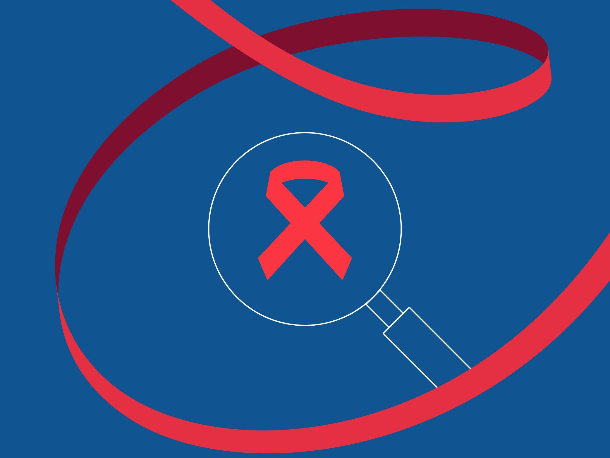
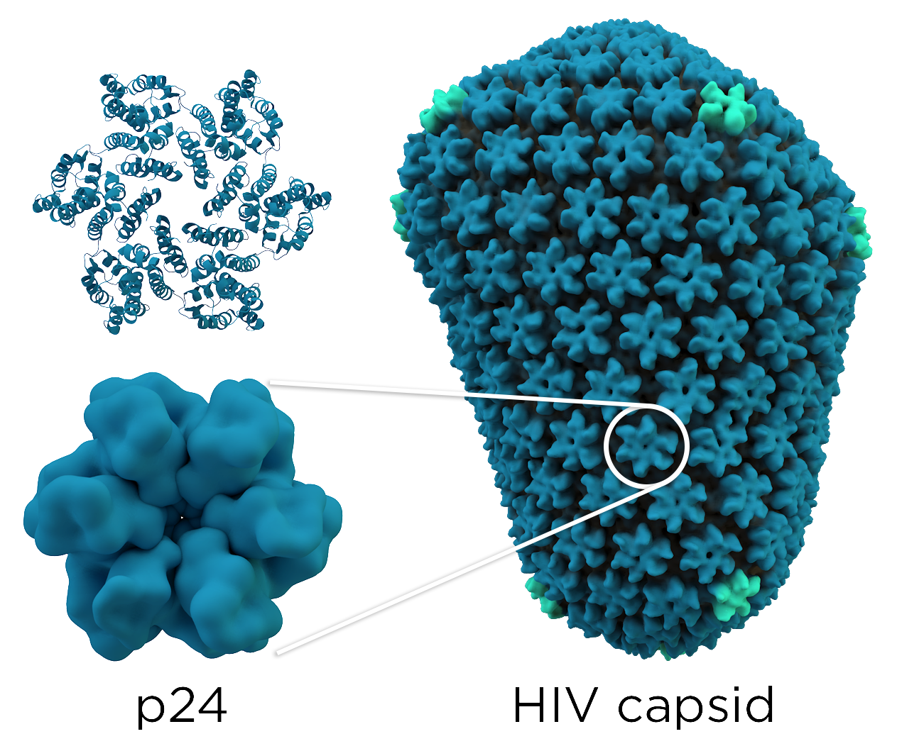
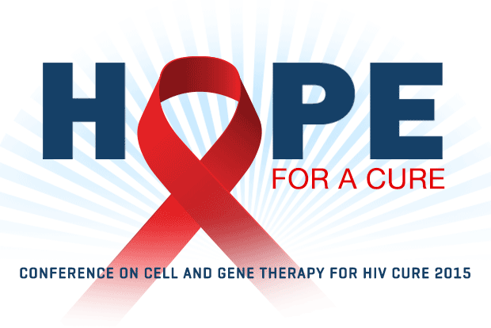

AIDS Website Project
-
What is AIDS?
- AIDS is a term used to describe a number of conditions caused by an infection with the human immunodeficiency virus (HIV) causing the immune system to fail in protecting the body from outside infections.
- AIDS is a retrovirus, meaning it can insert a DNA copy of itself into it's host cell (in this case the host cells are the white blood t cells)
- AIDS is known as the last stage of the virus HIV, which has a total of 3 stages: (1) Acute HIV, (2) Chronic HIV, (3) AIDS
- HIV is a deadly virus, and it kills more than half a million people every year, most of the current medicines are expensive and not available to anyone. that is why we made our cure

-
How do we diagnose HIV/AIDS?
- To find if a patient has HIV, we take the patient's saliva, and run two checks:
- First, we check the concentration of the amount of antigens for HIV, and then we do a search for proteins of the HIV virus
- This type of check is called "combo" because we use two checks one after the other

-
How do we cure AIDS?
- We cure AIDS by a systemic treatment of an injection of Romidepsin
- Romidepsin is a HDI (histone deacetylase inhibitor) that can help HIV infected cells release a certain protein
- The patient's body can then detect the cells releasing the protein and destroy them to stop the spread of the virus
- Romidepsin is currently used as a cure to a type of cancer called Cutaneous T-cell lymphoma (CTCL), this type of cancer works very similarly to HIV, where the T-cells are used against the patient's body, which is why Romidepsin can also be used as a cure to HIV

-
Credits: